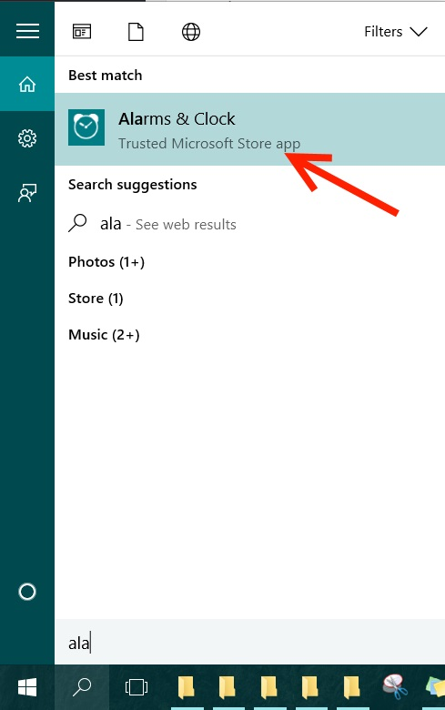
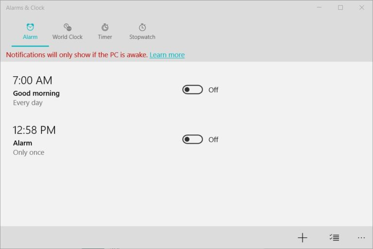
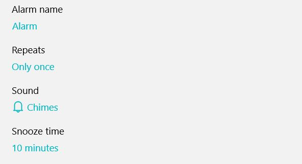
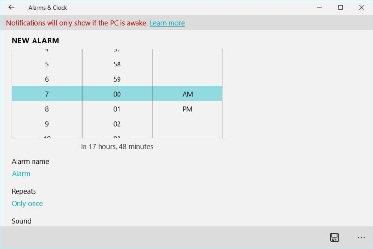
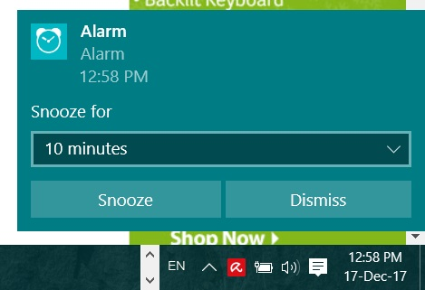

ໂດຍປົກກະຕິເຮົາມັກຈະເພິ່ງພາໂທລະສັບມືຖືທີ່ຈະຊ່ວຍປຸກທ່ານໃນຕອນເຊົ້າ ຫຼືບາງທີຕັ້ງເວລາໃນບາງຊ່ວງການເຮັດວຽກ ເຊັ່ນ ອາດຈະພັກຜ່ອນໃນຊ່ວງເວລາກາງເວັນຫຼືຕັ້ງເວລາໃນການໃຊ້ງານອື່ນໆ ໄດ້ເຊັ່ນດຽວກັບມືຖື ພຽງແຕ່ມີພີຊີຫຼືໂນດບຸກ window 10 ເທົ່ານັ້ນ ວິທີການຄ່ອນຂ້າງງ່າຍໃນການຕັ້ງໂມງປຸກໃນພີຊິຫຼືໂນດບຸກ window 10 ມີເງື່ອນໄຂພຽງຢ່າງດຽວຄື ລະບົບຈະ alert ເມື່ອຄອມຂອງທ່ານຍັງເຮັດວຽກຢູ່ເທົ່ານັ້ນ ຫາກຢູ່ໃນໂໝດ sleep ຫຼື hibernate ຈະບໍ່ມີການເຕືອນເກີດຂື້ນ ສະນັ້ນເວລາທີ່ທ່ານຈະໃຊ້ງານອາດຈະຕ້ອງເຂົ້າສູ່ໂໝດດັ່ງກ່າວນີ້ກ່ອນ ງ່າຍໆເລຍກໍ່ຄືເຂົ້າໄປຕັ້ງ power management ແລະປິດການຕັ້ງເວລາ sleep ຫຼັງຈາກທີ່ລະບົບຢຸດນິ້ງເປັນເວລາດົນ ການຕັ້ງໂມງປຸກ ຫຼື alarm ເທິງ window 10 ສາມາດເຮັດໄດ້ໂດຍ
ການຕັ້ງໂມງປຸກ “Alarm” ເທິງ Windows 10 ສາມາດເຮັດໄດ້ໂດຍ

1.ໃຫ້ພິມ alarm ລົງໄປໃນຊ່ອງ Windows search
2.ຄລິກໄປທີ່ “Alarm & Clock” ທີ່ປາກົດຂື້ນມາ ເທິງລາຍການຄົ້ນຫາ

3.ຄລິກທີ່ເຄື່ອງໝາຍ + ທີ່ຢູ່ທາງລຸ່ມຂອງໜ້າຕ່າງ ເພື່ອເພີ່ລາຍກາເຕືອນໃໝ່ ໂດຍທີ່ທ່ານຈະສາມາດແກ້ໄຂລາຍການຕໍ່ໄປໄດ້

4.ຈາກນັ້ນຈະເປັນການຕັ້ງເວລາເຕືອນ ໂດຍທີ່ທ່ານສາມາດຕັ້ງສຽງເຕືອນ ຕົວເລກເວລາ ແລະການຊ້ຳ ລວມໄປເຖິງການເຕືອນໃນແຕ່ລະຄັ້ງ

5.ຄລິກທີ່ປຸ່ມ Save ທີ່ຢູ່ທາງດ້ານລຸ່ມຂວາເທິງໜ້າຕ່າງ

ໂດຍດ້ານເທິງຂອງລະບົບຈະແຈ້ງວ່າ "Notification will only show if the pc is awake" ນັ້ນກໍ່ຄື ລະບົບຈະແຈ້ງເຕືອນຫຼື alarm ເມື່ອລະບົບຍັງເປີດການເຮັດວຽກເປັນປົກກະຕິ.